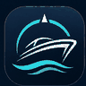

BOATSTATION
DASHBOARD
Mapa
Satélite
Ver flota
Rutas
Vinculá un barco para ver su posición. El mapa inicial no indica la ubicación de Chez.
Posiciones de BoatStation · No incluye tráfico AIS
Vincular barco
×
Ingresá el código que muestra BoatStation en Gestión de Estaciones.
Código de vinculación
Verificar y vincular